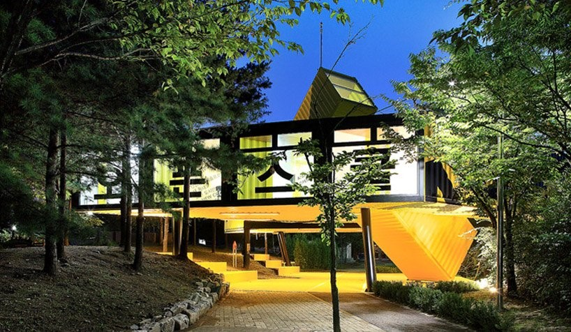

14 Utilisations INSOLITES de conteneurs maritimes
Aujourd’hui je vous propose un tour du monde des meilleures réalisations à base de conteneurs maritimes. De Mumbai au Vietnam, de la Corée du sud au Texas en passant par la Californie, Londres, Le Havre, le Portugal, Taiwan et la Suisse, découvrez ces constructions insolites qui ne manquerons pas d’éveiller votre imagination. Immeuble, maison, école, cabane, magasin, ouvrage d’art et bien plus encore. Vous allez découvrir les multiples facettes de cette boite en acier que la plupart des gens connaissent simplement pour sa fonction première de transport de marchandises.
Catène de conteneurs :
Le Havre a fêté en 2017 les 500 ans de sa fondation par François 1er. Pour célébrer ce demi-millénaire, était organisée une grande manifestation culturelle Intitulée « Un Été Au Havre ».
L’installation monumentale s’est rapidement imposée comme l’emblème d’Un Été au Havre. Forte de ses 36 containers, elle met à l’honneur la vie maritime de la ville, 1er port européen pour le trafic de conteneurs. Habituellement bien ordonnés sur leur cargo, ces conteneurs multicolores mettent le Quai de Southampton en fête et défient les lois de la gravité avec leurs 30 mètres de haut.
École d’art en conteneurs :
LOT-EK remporte le prix de design AIA New York Chapter pour l'APAP Shipping Container Art School. Cette école d’art est située à Anyang en Corée du sud.
Construit à partir de 8 conteneurs maritimes soigneusement agencés, le programme comprend trois zones différentes et interconnectées, chacune évoquant une expérience spatiale différente principalement centrée autour de l'environnement naturel du site. Positionnés le long du bord de la rivière, deux conteneurs sont inclinés vers le haut et vers le bas pour atteindre la terre et le ciel.


Conteneurs comme refuge de montagne insolite :
Conteneurs pour loger des touristes :
Ce homestay (hébergement chez l’habitant) situé à Baizhaifang, dans la ville d'Halong, au Vietnam, composé de 26 conteneurs dans un style unique est devenu un véritable hotspot pour les touristes de tous les côtés qui aiment découvrir la culture locale.
Ce gite, astucieusement installé dans des conteneurs, couvre une superficie de 500 mètres carrés et dispose de 26 chambres sur 4 étages. Parfait exemple de modèle commercial respectueux de l'environnement qui peut être utilisé jusqu'à 50 ans, avec un faible coût de mise en place et un temps de construction rapide.
Conteneurs dans un bidonville :
À la recherche de solutions au problème résidentiel dans le bidonville de Dharavi à Mumbai, en Inde, un concours international a été organisé au SuperSkyScrapers. Dans ce document, le conteneur devait être utilisé comme module de conception et les maisons proposées devaient être temporaires.
L'idée gagnante tient pleinement compte de l'avantage qu'offrent les conteneurs en les empilants. Dans ce document, la structure métallique elle-même sert de système structurel, réduisant considérablement les coûts des supports et des poutres. 4 supports avec chacun 8 conteneurs empilés pour un total de 32 étages x 2 côtés = 64 habitations.
Conteneur comme cabane design et contemporaine :
Bien que le terme «cabane» suggère généralement quelque chose de rustique, toutes les cabanes ne sont pas comme ça, certaines peuvent être très contemporaines et design.
Villa-conteneurs :
Cette maison impressionnante est constituée de 14 conteneurs. Situé dans le nord du Texas, la magnifique structure est idéalement positionnée pour admirer la vue depuis le paysage urbain environnant.
La maison de trois chambres dispose également de quatre balcons couverts surélevés et d'une grande terrasse sur le toit. La construction a coûté aux alentours de 350 000 $ ce qui rend cette impressionnante maison-conteneurs plus abordable que vous ne l’auriez pensé.

Le conteneur… entre art et fonctionnalité :
Comme une rare fleur du désert, la maison en conteneurs de James Whitaker prend vie près du parc national de Joshua Tree en Californie. Cette conception en forme d'étoile offre également une utilité : elle aide à garder la maison remplie de lumière naturelle, peu importe où le soleil peut être, et améliore le refroidissement. Whitaker continue de créer des concepts de conception uniques pour d'autres développements résidentiels et commerciaux basés sur des conteneurs.

Container … city :
« Container City » est le nom donné à deux éléments d’architecture constitués à base de conteneurs maritimes sur la péninsule de Leamouth au Royaume-Uni.
Le premier (Container City I) a été installé en 2001, en quatre jours, et aménagé sur cinq mois, à Trinity Buoy Wharf, dans le quartier londonien de Tower Hamlets. Celui-ci a été élargi avec une deuxième phase (Container City II) en 2002 et des bureaux ont été construits sur le même site dans le Riverside Building en 2005.
Le projet a favorisé la gestion de l’espace urbain, de sorte que le coût de la construction a été inférieure de moitié à celui d’une construction traditionnelle. Un résultat qui bien sûr, a aussi permis de diminuer le montant du loyer pour les locataires. Une solution donc bien existante pour contrer l’explosion du montant des loyers dans les villes du monde entier…
Conteneurs comme Incubateur créatif :
Composé de 14 conteneurs maritimes et de 2 bus pour handicapés, le Village Underground Lisbon est un espace de travail collaboratif pour des activités créatives, ainsi qu'un lieu pour des événements culturels. Il y a 60 places disponibles pour ceux qui veulent travailler dans ce type d'espace de réseautage, qui est à la fois créatif, culturel, éco-responsable et cool. Chaque conteneur ou bus peut être partagé par cinq personnes. Les prix varient entre 150 et 200 euros par personne et par mois et incluent Internet, l'électricité et la climatisation. Les étrangers qui ont besoin d'un espace pour travailler temporairement trouveront un conteneur exclusif conçu spécialement pour eux et qui peut être loué à l'heure, à partir de 30 €.
Toujours en contact avec Village Underground London, de nombreuses synergies et échanges sont désormais possibles. Prenez ce train, amusez-vous et travaillez dur.
Conteneur comme ouvrage d’art :
La pièce maîtresse d'un nouveau développement prévu à Edinburgh Park (Royaume-Uni) sera le tout premier bâtiment de l'artiste britannique David Mach, nommé «Mach 1» par les développeurs et investisseurs du projet, Parabola. En collaboration avec les architectes nominés au prix Stirling Dixon Jones, le bâtiment sera créé à partir de plus de 30 conteneurs d'expédition, mais pas selon la méthode modulaire et linéaire à laquelle les bâtiments de conteneurs d'expédition se prêtent généralement.
Un bâtiment polyvalent prévu pour accueillir la suite marketing du développement, Mach 1 comprendra un grand espace d'exposition de type galerie et un café-bar pour lui donner la flexibilité d'accueillir des événements à différentes échelles.
Conteneurs comme vedettes d’un festival d’art :
Kaohsiung International Container Arts Festival
Depuis 2001, cet événement culturel a lieu tous les deux ans dans la deuxième plus grande ville de Taïwan, Kaohsiung. Des artistes talentueux du monde entier ont été invités à exprimer leurs idées sur l'écologie urbaine et à se joindre à la recherche de solutions possibles aux situations difficiles des conditions de vie modernes.
L’un des organisateurs du festival déclare : "Le conteneur n'est pas seulement une boîte en acier, nous encourageons l'esprit à sortir des sentiers battus ! "
Conteneurs comme référence historique :
Le cabinet suisse d’architecture Bureau A a créé STEELHENGE, une interprétation contemporaine de la structure mégalithique de Stonehenge en Angleterre lors de la première édition du BIG – Biennale des espaces d’art Indépendants de Genève.
48 conteneurs maritimes ont été utilisés pour recréer la forme du célèbre monument destiné à accueillir une variété d’événements sociaux, tels que des concerts, des marchés et des expositions d’art.
L’utilisation de conteneur a permis une mise en place du site en seulement une journée.
Conteneurs comme magasin :
Le Starkuck conteneur store à Taiwan à fait dans l’originalité.
La conception nouvelle et innovante du magasin fera de cette succursale de Taiwan Starbucks le premier magasin de la région Asie-Pacifique à avoir l'ensemble du site composé de 29 conteneurs maritimes blancs. La conception innovante du 21e siècle est l'œuvre de l'architecte Kengo Kuma.
Modulaire, polyvalent, tendance mais surtout éco-responsable le conteneur maritime permet de répondre à de nombreux besoins et à d’innombrables utilisations. A l’heure de la prise de conscience mondiale de notre impact environnemental, de l’importance du recyclage, de la ré-utilisation et de l’écologie, le conteneur apparaît en effet comme une solution miracle, une ardoise vierge pour les idées, en somme une solution d’avenir qu’il ne tiens qu’à nous de saisir.